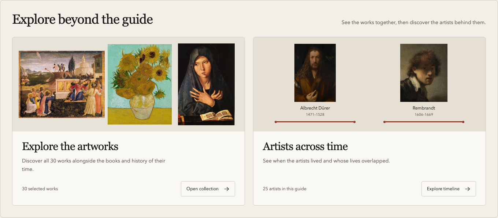
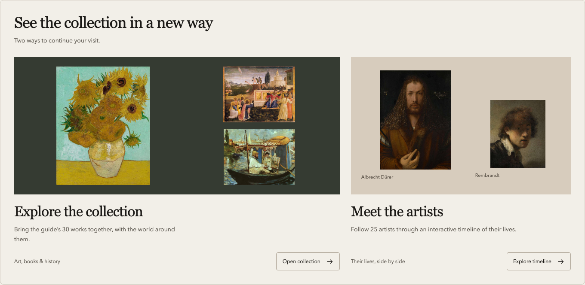
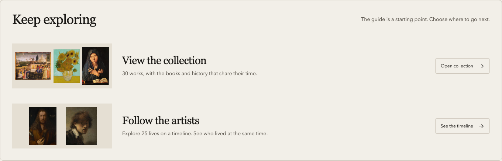
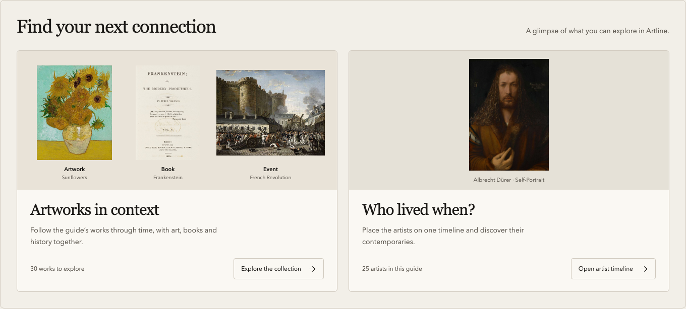

<!doctype html><html lang="en"><meta charset="utf-8"><meta name="viewport" content="width=device-width,initial-scale=1"><title>Artline · Four guide concepts</title><style>*{box-sizing:border-box}body{margin:0;background:#e5e1d8;color:#1b1916;font-family:"Avenir Next",Arial,sans-serif;padding:26px}header{display:flex;justify-content:space-between;align-items:center;margin:0 0 22px}h1{font:32px Georgia;margin:0}header p{font-size:13px;margin:0;color:#625d55}main{display:grid;grid-template-columns:1fr 1fr;gap:24px}figure{margin:0;min-width:0;background:#faf8f3;border:1px solid #c9c1b5;padding:16px 14px 14px}figcaption{display:flex;justify-content:space-between;gap:15px;margin:0 0 12px;font-size:15px}figcaption span{font-size:12px;color:#625d55}img{display:block;width:100%;height:auto}a{color:inherit;text-decoration:none}a:focus-visible{outline:3px solid #8f3a29}footer{margin-top:22px;font-size:13px;color:#625d55}@media(max-width:700px){main{grid-template-columns:1fr}header{display:block}header p{margin-top:12px}}</style><header><h1>Four ways to explore a guide</h1><p>Artline · Munich museum guide</p></header><main><figure><figcaption><strong>A · Gallery pair</strong><span>Recommended</span></figcaption><a href="index.html?view=a"></a></figure><figure><figcaption><strong>B · Exhibition spread</strong><span>More emphasis on art</span></figcaption><a href="index.html?view=b"></a></figure><figure><figcaption><strong>C · Compact invitations</strong><span>Less vertical space</span></figcaption><a href="index.html?view=c"></a></figure><figure><figcaption><strong>D · Static imagery</strong><span>Artwork, book, event & portrait</span></figcaption><a href="index.html?view=d"></a></figure></main><footer>Two illustrated destinations in every concept. No separate events or books buttons. Article changes await your choice.</footer></html>
